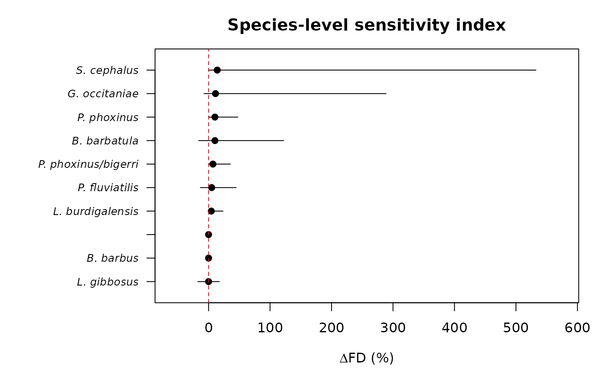

Species-level sensitivity index for functional space estimates
Source:R/species_sensitivity.R
species_sensitivity.RdFor each species, quantifies how much replacing that species' centroid
with one of its real individuals changes the estimated functional
richness (an n-dimensional convex-hull volume in PCA space), while every
other species stays fixed at its own centroid, following the
species-level sensitivity index of Bertrand (2026, Section
"Species-level sensitivity index"). This complements
bootstrap_functional_space()'s community-wide comparison by asking a
finer-grained question: which species drive the difference between
individual-based and centroid-based functional richness, and are their
individual effects consistent or highly variable?
Usage
species_sensitivity(
x,
groups = NULL,
n_axes = NULL,
var_threshold = 0.98,
log_transform = TRUE,
scale = TRUE
)Arguments
- x
Either an object of class
"intrait_traitspace"(fromtrait_space(), built withgroupssupplied), or adata.frame/matrix of numeric traits (one row per individual), in which casegroupsmust also be supplied and the samelog_transform/scalepreprocessing astrait_space()is applied before the PCA described below.- groups
Required when
xis a raw trait table (one value per individual, typically species identity); ignored (taken fromx$groups) whenxis an"intrait_traitspace"object.- n_axes, var_threshold, log_transform, scale
As in
bootstrap_functional_space():n_axesPCA axes are used for the convex hull (auto-selected viavar_thresholdifNULL), computed from a fresh PCA onx$X(or on freshly standardisedx).
Value
An object of class "intrait_species_sensitivity", a list with
elements: summary (a data.frame, one row per species, with
columns species, n_individuals, mean_dFD, min_dFD, max_dFD
– the species-level index, i.e. Bertrand (2026)'s mu_k and range,
in the original levels(groups) order), individual (a long-format
data.frame with one row per individual, columns species and
dFD, for full transparency beyond the per-species summary), fd_ref
(the community-wide centroid-based reference volume), n_axes, and
var_explained. Has dedicated print() and plot() methods.
Details
For a focal species k with individuals i = 1, ..., n_k, its centroid
in the n_axes-dimensional PCA space is replaced, one individual at a
time, by that individual's own PCA scores, while every other species
remains at its centroid; the convex-hull volume of this modified
n_species-point configuration is FD_{k,i}. Each replacement is
expressed as a percentage change relative to the (unmodified)
centroid-based reference volume fd_ref:
$$\Delta FD_{k,i} (\%) = 100 \times (FD_{k,i} - FD_{ref}) / FD_{ref}$$
A positive dFD means that individual, if it alone stood in for its
species' centroid, would expand the estimated functional space; a
negative dFD means it would contract it. mean_dFD (mu_k)
summarises the average tendency of a species' individuals, and
min_dFD/max_dFD describe the heterogeneity of individual effects
within that species – a wide range indicates a few unusual individuals
rather than a consistent species-level tendency (see Bertrand, 2026,
for worked examples of both patterns in real data).
Unlike bootstrap_functional_space(), this index requires no
resampling or significance test: every replacement is deterministic
(one individual, one recomputed volume), so species_sensitivity() is
exact given x/groups/n_axes, not simulation-based. Species with
only one individual still receive a (single-valued) mean_dFD, with
min_dFD == max_dFD and no useful "range" to speak of, which is
expected, not an error.
Every individual, across every species, requires its own convex-hull
recomputation (one call per individual in x/groups, not per
species), so this is the most computationally demanding of the two
functional-space functions on a large data set – Bertrand (2026)'s
regional panel, for instance, had 1,302 individuals. Each individual's
replacement is independent of every other's, so, exactly as in
bootstrap_functional_space(), this is distributed automatically
across future.apply's workers when that package is installed and a
parallel future::plan() has been set beforehand; with no plan set, or
without future.apply, it runs sequentially with identical results.
References
Bertrand P (2026). Intraspecific trait variability shapes the functional space of freshwater fish in French Guiana assemblages. M2 Biodiversity Ecology Evolution (BEE) internship report, Lille University / Centre de Recherche sur la Biodiversite et l'Environnement (CRBE, AQUAECO team), unpublished, supervised by A. Toussaint and S. Brosse.
Villeger S, Mason NWH, Mouillot D (2008). New multidimensional functional diversity indices for a multifaceted framework in functional ecology. Ecology, 89(8), 2290-2301.
Examples
# \donttest{
if (requireNamespace("geometry", quietly = TRUE)) {
fish <- load_t26_saudrune_landmarks()
segments <- fishmorph_segments(fish)
ratios <- fishmorph_ratios(segments)
ts <- trait_space(ratios, groups = fish$metadata$species, na_action = "omit")
ss <- species_sensitivity(ts, n_axes = 2)
ss
plot(ss)
}
#> Warning: 3 specimen(s) have a zero-length or missing scale bar (points 20-21); their segments will be NA.
#> Warning: Dropping non-numeric column(s) from the ordination: specimen, individual, species, population, operator
#> na_action = "omit": removing 230 row(s) out of 558 with missing values.
#> flag_outliers: 21 specimen(s) flagged as within-group outlier(s) across 5 group(s) (Barbatula barbatula, Gobio occitaniae, Leuciscus burdigalensis, Phoxinus phoxinus/bigerri, Squalius cephalus); this only flags candidates for review (e.g. with plot_landmarks()/plot_fishmorph_points()), nothing was removed automatically. Set remove_outliers = TRUE to exclude them from the ordination, or see $outlier_screen for details.
#> flag_outliers: 2 group(s) have fewer than outlier_min_n = 5 specimens and were not screened (distance still reported, flagged = NA).

# }